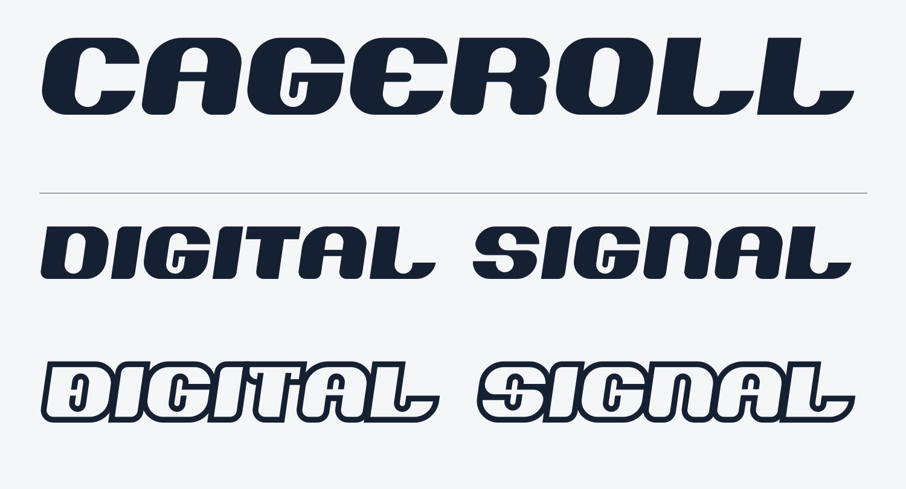
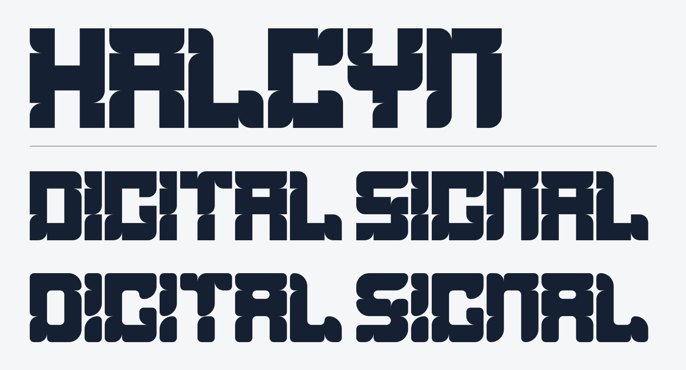
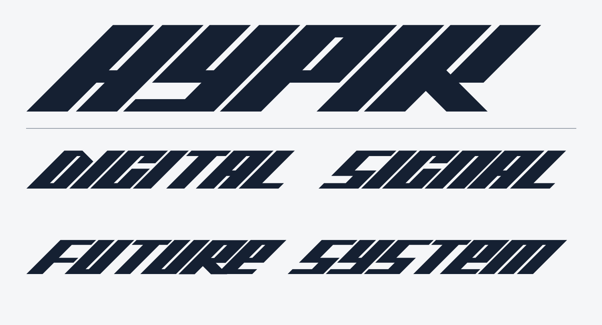
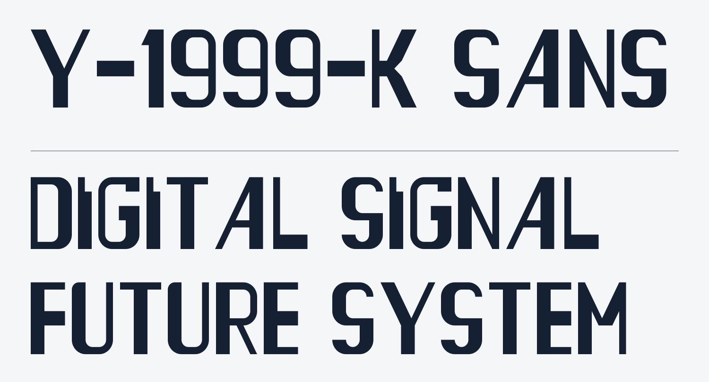
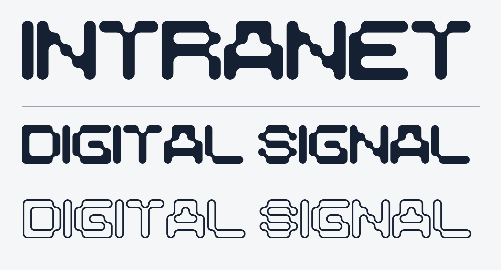

文字の形を見る
初代PlayStationのレースゲームを手掛かりにした書体です。下の二行は同じ単語で、下段では文字の中身を抜いて線だけを残した「Cage」を使っています。
作品・制作の例8件を紹介しています。実作品画像5点、参照・関連画像0点。画像の収集は継続中です。
現代の表現方法・説明用の分類
Y2K revival
昔の未来っぽさを、今の画面で楽しむ。Y2Kリバイバルは、2000年前後を思わせる表現を、後の時代につくり直す動きの呼び名です。Y2Kは「2000年」を表す言い方です。
実作品を見る

画像を表示できませんでした。下の出典ページで確認できます。
ホルヘ・ビジャレアル / 2022年
初代PlayStationのレースゲームを手掛かりにした書体です。下の二行は同じ単語で、下段では文字の中身を抜いて線だけを残した「Cage」を使っています。
ホルヘ・ビジャレアル《Cageroll》。配布元の正規書体を使用したDESIGN LINEAGEの組見本。
出典で作品・資料を見る ↗実作品を見る

画像を表示できませんでした。下の出典ページで確認できます。
Nvxzr Visual / 2022年
Y2K期のタイポグラフィーを参照して、ロゴや服の見出しに使えるよう設計された書体です。下の二行では標準と角を丸めた版を並べ、同じ字の輪郭を比べられます。
Nvxzr Visual《Halcyn》。配布元の正規書体を使用したDESIGN LINEAGEの組見本。
出典で作品・資料を見る ↗実作品を見る

画像を表示できませんでした。下の出典ページで確認できます。
マット・ウィルソン / 2022年
Y2Kの表現から着想したロゴ用の英字書体です。字面の一部が欠けても単語として読めるか、下の二行で試せます。配布サイトではダウンロード数が40万件を超えています。
マット・ウィルソン《Hypik》。配布元の正規書体を使用したDESIGN LINEAGEの組見本。
出典で作品・資料を見る ↗実作品を見る

画像を表示できませんでした。下の出典ページで確認できます。
ナウファル・ムハンマド・ハイカル / 2023年
昔のゲームに描かれた「未来」の感覚を、2023年の文字に取り戻そうとした書体です。作品名に入った数字の9と、下の二行で繰り返す英字の角に目を向けてみてください。
ナウファル・ムハンマド・ハイカル《Y-1999-K Sans》。配布元の正規書体を使用したDESIGN LINEAGEの組見本。 CC BY 3.0。
出典で作品・資料を見る ↗実作品を見る

画像を表示できませんでした。下の出典ページで確認できます。
ジョアン・セラフィム / 2025年
2000年代初頭のネット画面を振り返って生まれた書体です。曲線を小さな段差で描き、拡大すると画素の積み重なりが見えます。下段は輪郭だけで同じ単語を組んだ版です。
ジョアン・セラフィム《IntraNet》。配布元の正規書体を使用したDESIGN LINEAGEの組見本。
出典で作品・資料を見る ↗歴史上の定評ある代表作と断定する選定ではありません。制作側の説明や教材から、表現が確かめられる例を区別して掲載しています。
表現が確かめられる制作事例
制作者がピクセルや32ビットの時代を参照したと説明しています。
作品・資料の出典を見る ↗原題：Y2K Group identity and website
ヴァイオレット・オフィス／ジェームズ・テー / 2021 / ブランド・ウェブサイト
日本語の見出しは読みやすさのための呼び名・説明名です。原題は記録欄に示しています。
画像の転載条件は未確認。出典の公開は転載許諾ではありません。
表現が確かめられる制作事例
南アジアの模様と、2000年前後を思わせる金属のような光沢を合わせています。商品写真にふれると、その写真の色に画面が染まる仕組みもあります。
作品・資料の出典を見る ↗原題：Abacaxi identity and website
デザイン事務所 Labud（ラブド） / 制作年未確認 / ブランド・ウェブサイト
日本語の見出しは読みやすさのための呼び名・説明名です。原題は記録欄に示しています。
画像の転載条件は未確認。出典の公開は転載許諾ではありません。
表現が確かめられる制作事例
制作者がワイツーケー（2000年前後の表現）やスケート文化の影響を明記した例です。
作品・資料の出典を見る ↗原題：Sun God Festival ’26
カリフォルニア大学サンディエゴ校の学生デザイン部門／ライリー・ボイルズら / 2026 / 催事のデザイン・ウェブサイト
日本語の見出しは読みやすさのための呼び名・説明名です。原題は記録欄に示しています。
画像の転載条件は未確認。出典の公開は転載許諾ではありません。
デジタル書体（実書体を用いた図鑑独自の組見本）
初代PlayStationのレースゲームを手掛かりにした書体です。下の二行は同じ単語で、下段では文字の中身を抜いて線だけを残した「Cage」を使っています。
作品・資料の出典を見る ↗原題：Cageroll
ホルヘ・ビジャレアル / 2022年 / デジタル書体（実書体を用いた図鑑独自の組見本）
デジタル書体（実書体を用いた図鑑独自の組見本）
Y2K期のタイポグラフィーを参照して、ロゴや服の見出しに使えるよう設計された書体です。下の二行では標準と角を丸めた版を並べ、同じ字の輪郭を比べられます。
作品・資料の出典を見る ↗原題：Halcyn
Nvxzr Visual / 2022年 / デジタル書体（実書体を用いた図鑑独自の組見本）
デジタル書体（実書体を用いた図鑑独自の組見本）
Y2Kの表現から着想したロゴ用の英字書体です。字面の一部が欠けても単語として読めるか、下の二行で試せます。配布サイトではダウンロード数が40万件を超えています。
作品・資料の出典を見る ↗原題：Hypik
マット・ウィルソン / 2022年 / デジタル書体（実書体を用いた図鑑独自の組見本）
デジタル書体（実書体を用いた図鑑独自の組見本）
昔のゲームに描かれた「未来」の感覚を、2023年の文字に取り戻そうとした書体です。作品名に入った数字の9と、下の二行で繰り返す英字の角に目を向けてみてください。
作品・資料の出典を見る ↗原題：Y-1999-K Sans
ナウファル・ムハンマド・ハイカル / 2023年 / デジタル書体（実書体を用いた図鑑独自の組見本）
デジタル書体（実書体を用いた図鑑独自の組見本）
2000年代初頭のネット画面を振り返って生まれた書体です。曲線を小さな段差で描き、拡大すると画素の積み重なりが見えます。下段は輪郭だけで同じ単語を組んだ版です。
作品・資料の出典を見る ↗原題：IntraNet
ジョアン・セラフィム / 2025年 / デジタル書体（実書体を用いた図鑑独自の組見本）
当時つくられたものと、後から振り返ってつくったものを分けます。銀色、ピクセル、丸い文字などのどれか一つがあれば当てはまる、という決まりではありません。
金属のような光や明るい色が使われる場合がありますが、作品ごとに違います。
丸い文字や小さな画面風の文字など、何を昔らしいと感じさせるか見ます。
昔の機器や画面の形を、今どのように使い直したか探します。
見た目は懐かしくても、今の画面幅や操作に合わせて組み直せます。
2000年前後の実物は「リバイバル」の作品ではなく、その参照先です。ピクセルアートのすべてがY2Kでもありません。
昔の技術上の制限をそのまま戻す必要はありません。懐かしさと読みやすさを両立できるか考えましょう。
2000年前後の視覚文化を着想源に、後の時代に制作された書体を、その正規フォントで組んだ字形標本で見比べます。
作品・制作の例8件を紹介しています。実作品画像5点、参照・関連画像0点。画像の収集は継続中です。